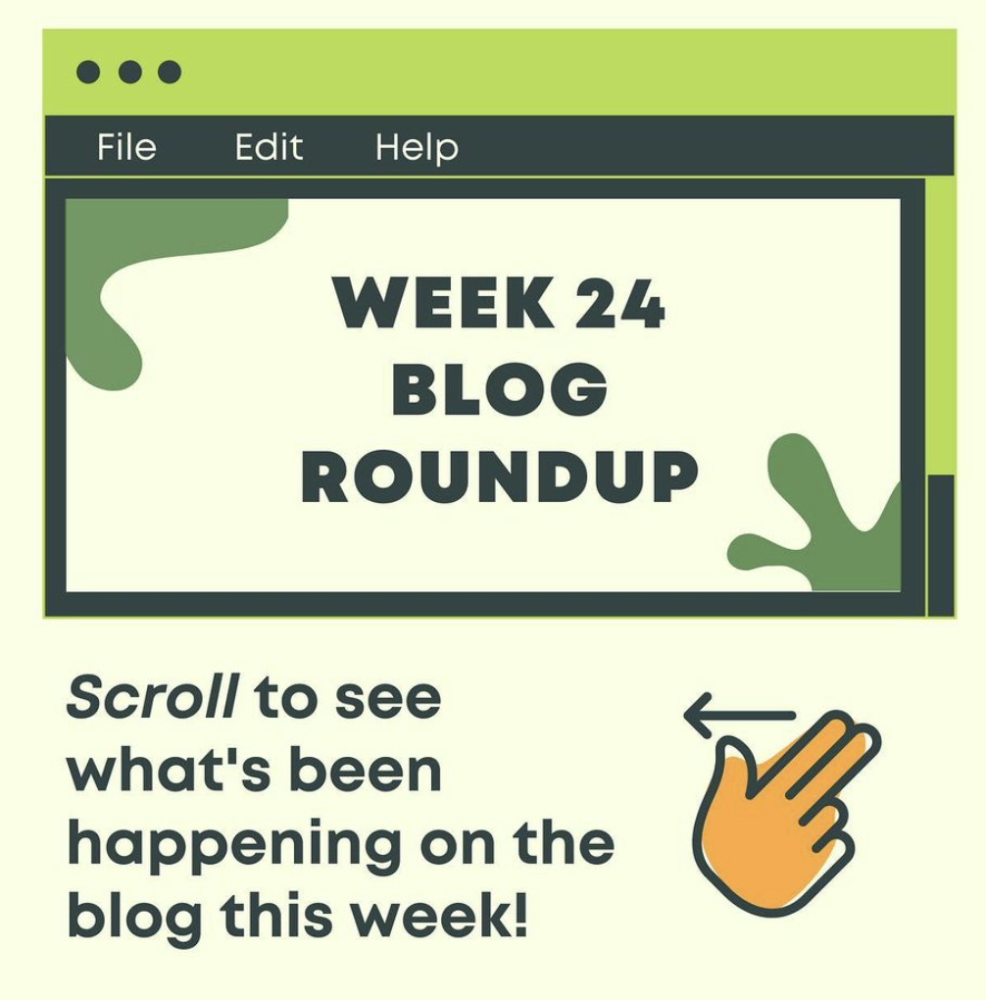

Photography
A collection of my best shots - Canon 1300D.
Artwork
I like to draw sometimes.

Graphic Design
Currently working with @Refillar.
A collection of my best shots - Canon 1300D.
I like to draw sometimes.
Currently working with @Refillar.